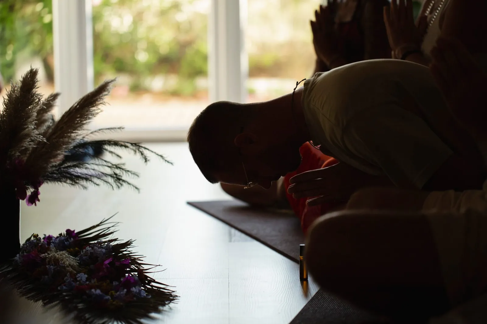
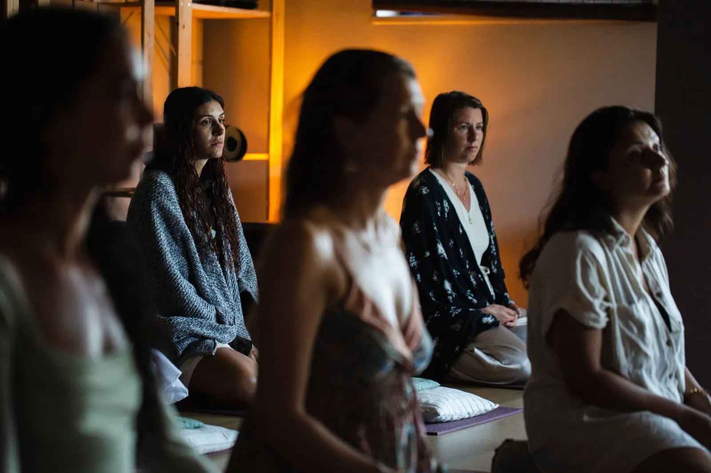

Soul Alchemy Retreats
reconnect with your true essence
Seven days to come home to yourself
A Soul Alchemy Retreat is a six-night, seven-day holistic journey in a private Portuguese quinta, built on love, playfulness, authenticity and vulnerability.
The days weave together mindfulness and guided meditation, yoga and Qi-Gong, aromatherapy, massage, sound healing, soul-nourishing ritual and honest rest. Plant-based meals. Small circles. Nature all around. A safe space to explore, release and realign.
Peter's retreats grow from four seasons living and working at Vale de Moses, one of Europe's most loved yoga retreats in the Portuguese mountains, where he supported more than fifty retreats and massaged hundreds of guests before beginning to host his own.

A day at the retreat
Each edition carries its own theme (past journeys have followed the five elements, and the search for dharma) but the days share one gentle rhythm:
| 7:15 | Tibetan Pranayama & meditation |
| 8:30 | Hatha Yoga & Qi-Gong |
| 10:00 | Plant-based breakfast |
| 11:00 | Free time, pool & 1-on-1 treatments |
| 17:00 | Transformational holistic workshop |
| 19:30 | Dinner, music, sharing, laughter |
| 21:00 | Evening meditation |
From past journeys
The 5 Elemental Journey at Monte Terrace, Alentejo · Seeking Dharma at A Good Place, Algarve.
{kind=link}
{kind=link}
{kind=link}
{kind=link}
{kind=link}
{kind=link}
{kind=link}
{kind=link}
In their own voices
Six short videos from guests of past journeys. Tap one to listen.